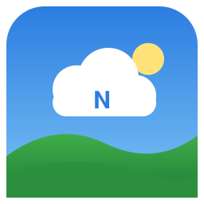

NimbusOS
A hobby operating system for x86-64, written from scratch, with a Windows-style desktop.
All of this is open source and available on GitHub. PR's and more stuff is encouraged.
What's new in 0.2
- Nimbus Update: version numbers now read like decimals (3.2 is newer than 3.123, 3.121 newer than 3.12)
- File Explorer: a plugged-in USB stick shows up as the folder /USB (browse, rename, delete, copy and move files between it and the system disk)
- USB: USB sticks work (xHCI controller + mass storage); open one in the Terminal with the "fat" command
- FAT32: read and write FAT32 disks (USB-stick style, with long file names) from the Terminal with the "fat" command: info, ls, cat, get, put, mkdir, rm
- Nimbus Update: "What's new" is now a scrollable box (mouse wheel, scroll bar, arrow keys, Page Up/Down) with wrapped lines, so long release notes can be read in full
- Web Browser: tables with real columns, borders, cell colours and nested tables, so old-style pages lay out properly
- Web Browser: pictures (PNG, GIF and JPEG) load after the page, scaled to fit, and picture links work
- Web Browser: forms with text boxes, buttons, check boxes and radio buttons (GET and POST), so search pages and their Next buttons work
- Web Browser: lists with bullets and numbers, indents, rules, italic text, accented letters and real curly quotes
- Web Browser: old HTML markup (font colours and sizes, align, body colours) and search pages with menus and icons display cleanly
- Web Browser: user-agent switching from the UA button list (or Ctrl+U): NimbusOS, Chrome, Edge, Firefox, Safari, Android, Lynx); cookies are kept while the browser runs
- Web Browser: search the web by typing words in the address bar (DuckDuckGo), result links go straight to the page, and links with queries, ../ and #fragments work
- Text: the UI font is now anti-aliased DejaVu Sans, regular and bold, so text is smoother at every size
- Web Browser: CSS support: <style> blocks, colours, bold, font sizes, centred and right-aligned text, underline, and hidden elements
- Web Browser: headings use a larger font, and words no longer have stray gaps before punctuation
- Cursor: choose the pointer style, size and colour in Settings > Cursor, or use your own small BMP picture as the pointer
- Block Runner: an original side-scrolling jump game in the Start menu
- Calculator: a four-function desk calculator in the Start menu, with keyboard input
- Breakout: a brick-breaking game in the Start menu
- System clipboard: Ctrl+C and Ctrl+V work in text fields, and Ctrl+Shift+C shows the clipboard history
- Paint: transparent pen (first swatch), canvas sizes from 32x32 to 3840x2160 (Size, or Ctrl+W), and transparent pictures save with alpha
Credits
NimbusOS credits
================
Project lead: enderbrosik (Me)
Project homepage: https://github.com/enderbrosik/nimbusOS
Thanks to the contributors, testers, and community members who keep NimbusOS growing.
Major contributors and inspiration:
- enderbrosik (me) for the original NimbusOS project and ongoing development
- The OSDev and x86 assembly communities for ideas, examples, and inspiration
- Everyone who reports bugs, shares feedback, and helps polish the desktop experience
- My awesome teachers in Group 7 and Group 8 to motivate me and teach me stuff
NimbusOS is built from original code for the bootloader, kernel, drivers, filesystem,
GUI, and apps; no existing kernel, libc, or GUI library is used.
Run it
NimbusOS runs in QEMU (on a Mac: brew install qemu).
Boot the live CD with a blank 60 MB disk to install onto:
truncate -s 60M disk.img
qemu-system-x86_64 -m 256M -vga std \
-audiodev coreaudio,id=snd0 -device AC97,audiodev=snd0 \
-nic user,model=e1000 \
-cdrom nimbusos-0.2.iso -boot d \
-drive file=disk.img,format=raw,index=0What's inside
Desktop
Draggable windows, taskbar, Start menu, File Explorer, Notepad, Paint with a transparent pen and canvas sizes up to 4K, Calculator, Terminal, Settings, a shared clipboard, and custom pointers.
Games & media
Minesweeper, Snake, Solitaire, Block Runner, Breakout, and a Media Player with AC'97 sound.
Internet
Its own TCP/IP stack and a TLS 1.3 client. The Web Browser opens http:// and https:// pages with tables, pictures, forms and core CSS, and searches the web from the address bar.
Programs
Ring-3 user programs with their own C library, system calls and ELF loader.
Smooth text
Anti-aliased DejaVu Sans in regular and bold, with larger headings in the browser.
Nimbus Update
Signed updates from this site, with two kernel slots so an update can't break booting.
From scratch
Bootloader, 64-bit kernel, drivers, file system and GUI: no existing kernel, libc or GUI library.